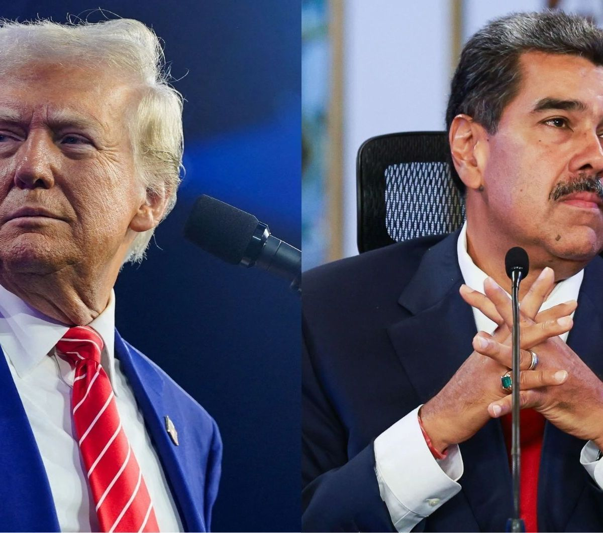

Desde o dia 19 de agosto de 2025, Trump vem mandando navios militares para a região do Caribe - especialmente a Venezuela.
Contudo, qual seria a necessidade para tal ação? Acontece que, em palavras de Donald Trump (atual presidente dos Estados Unidos), vem entrando muitas drogas pelos países caribenhos, onde o mesmo decidiu abrir uma ação militar para acabar com os cartéis de drogas venezuelanos, enviando cerca de 3 a 9 navios militares. Porém, não tem dados o suficiente que provem o transporte ilegal de drogas para os EUA e se torna mais comunicável países como Bolivia, Colombia e até de Israel estarem lucrando com o tráfico internacional do que a própria Venezuela.
Acusações foram feitas para Nicolás Maduro (atual presidente da Venezuela), onde o porta-voz dos Estados Unidos citou: “Maduro não é presidente legítimo, além de ser ‘fugitivo’ (esse termo se mantém em aspas pois Trump ofereceu $50 mil doláres para quem desse informações para a condenação de Maduro) e chefe de cartel narcoterrorista” e esse seria um dos motivos para os estadunidenses irem com força. Maduro nega as acusações e diz que a Venezuela sempre esteve disposta a conversar, também comenta: “Digo mais uma vez ao presidente Donald Trump que a tentativa de criar um caso falso sobre tráfico de drogas é um erro. Os Estados Unidos devem abandonar seu plano de mudança violenta de regime na Venezuela, na América Latina e no Caribe, e respeitar nossa soberania, heroicamente conquistada por nossos libertadores”, afirmou. A cada fala e ação dos líderes, a tensão aumenta, fazendo Nicolás convocar 4,5 milhões de milicianos, além dos militares e civis.
Segundo os Estados Unidos, não há chance de ataques em terras venezuelanas, pois as forças armadas da Venezuela são escassas, possuindo poucas armas, problemas de prontidão por conta do isolamento regional e crises econômicas que o país vêm enfrentando. A Instituição Internacional de Estudos Estratégicos (IISS, sigla em inglês), também conta que, com a capacidade menor por conta de eventos trágicos, a Venezuela tem que reparar e aprimorar as armas que já possuem, fazendo a Marinha e Aeronáutica ficarem despreparadas. Porém, os maiores aliados da Venezuela no quesito de armamento são: China, Irã e Rússia. Contudo, suas armas ainda são defasadas, fazendo o armamento aéreo se destacar. Além desses países, Brasil também ajuda com frota de aeronaves, apelidadas de “Tucanos”.
No último dia 11, um barco saiu de Tren de Aragua e ia em direção aos EUA, porém, antes mesmo de ter alguma confirmação, Trump dá ordens de atacar, jogando mísseis e matando todos a bordo (ao todo, 11 pessoas). O presidente disse que o barco levava drogas ao seu país, mas ainda não tivemos provas disso. Nicolás confirma que nenhum dos passageiros faziam parte ou tinham relação com o tráfico.
Enquanto Donald Trump afirma que busca demonstração de força e armamento, Maduro entende que é apenas uma ameaça contra sua pessoa e comenta que não entende a real intenção do “ditador americano”.
Algo que deixou as pessoas confusas foi que em julho, Maduro e Trump conversavam sobre deportação de imigrantes ilegais ou presos em seus países, alguns venezuelanos e cubanos se sentiram traído ao saber disso, pois, com o apoio dado ao Presidente Donald Trump, eles esperavam que ele reforçasse as sanções contra Caracas. "Ao mesmo tempo em que três destróieres Aegis se deslocam para o sul, há carregamentos da Chevron se deslocando para o norte. Essa imagem diz muito sobre por que as pessoas estão muito confusas sobre qual é o verdadeiro objetivo por trás disso.” Relata Chávez, ex-subsecratário dos EUA, onde cuidava de assuntos do Hemisfério Ocidental.
O presidente norte-americano pediu a intensificação de jatos e armamento militar na região caribenha, como uma forma de pressão aos traficantes, enviando 10 caças F-35 ao local de pouso, em Porto Rico. “Estamos prontos para uma luta armada, se for necessário. Ao longo de toda a costa venezuelana, desde a fronteira com a Colômbia até a leste do país, de norte a sul e de leste a oeste, temos uma preparação completa de tropas oficiais”, afirmou Maduro na Ciudad Caribia, na costa central do país, em uma transmissão pela televisão estatal.
